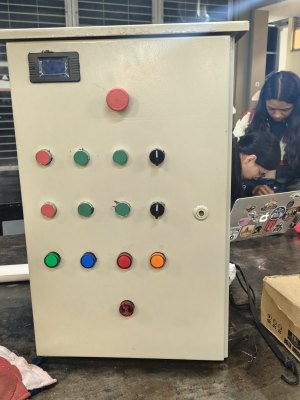
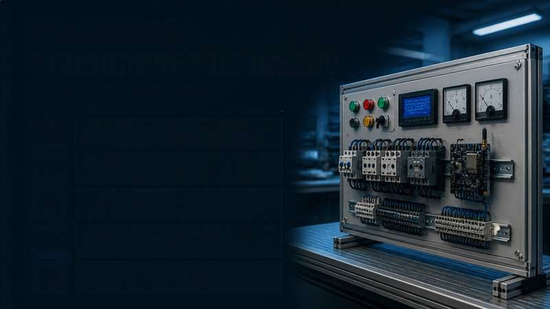
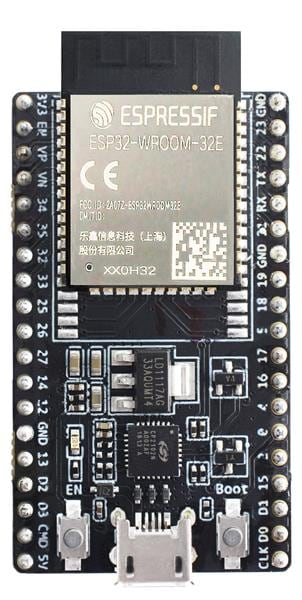
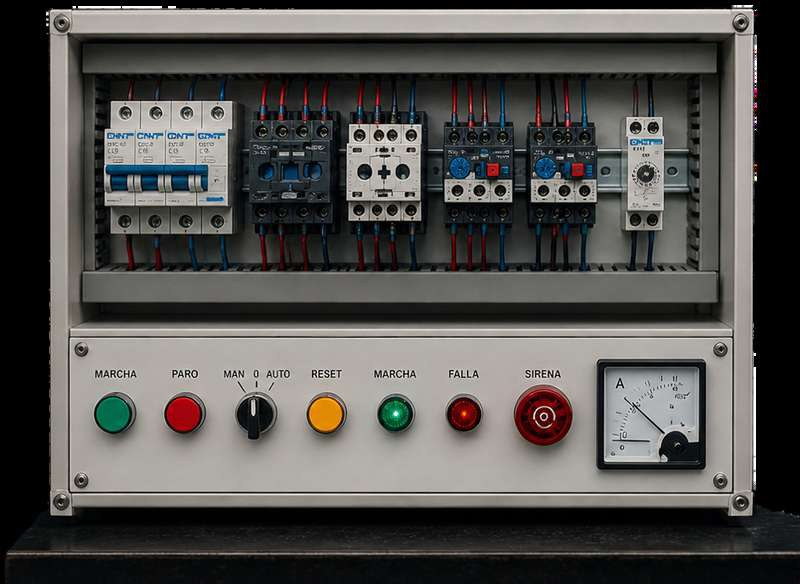

Fotos del tablero construido y renders de diseño, cada uno identificado en su etiqueta (FOTO o RENDER): protecciones, contactores, relés térmicos, panel frontal y el módulo ESP32. Pulsa cualquier imagen para ampliarla.



